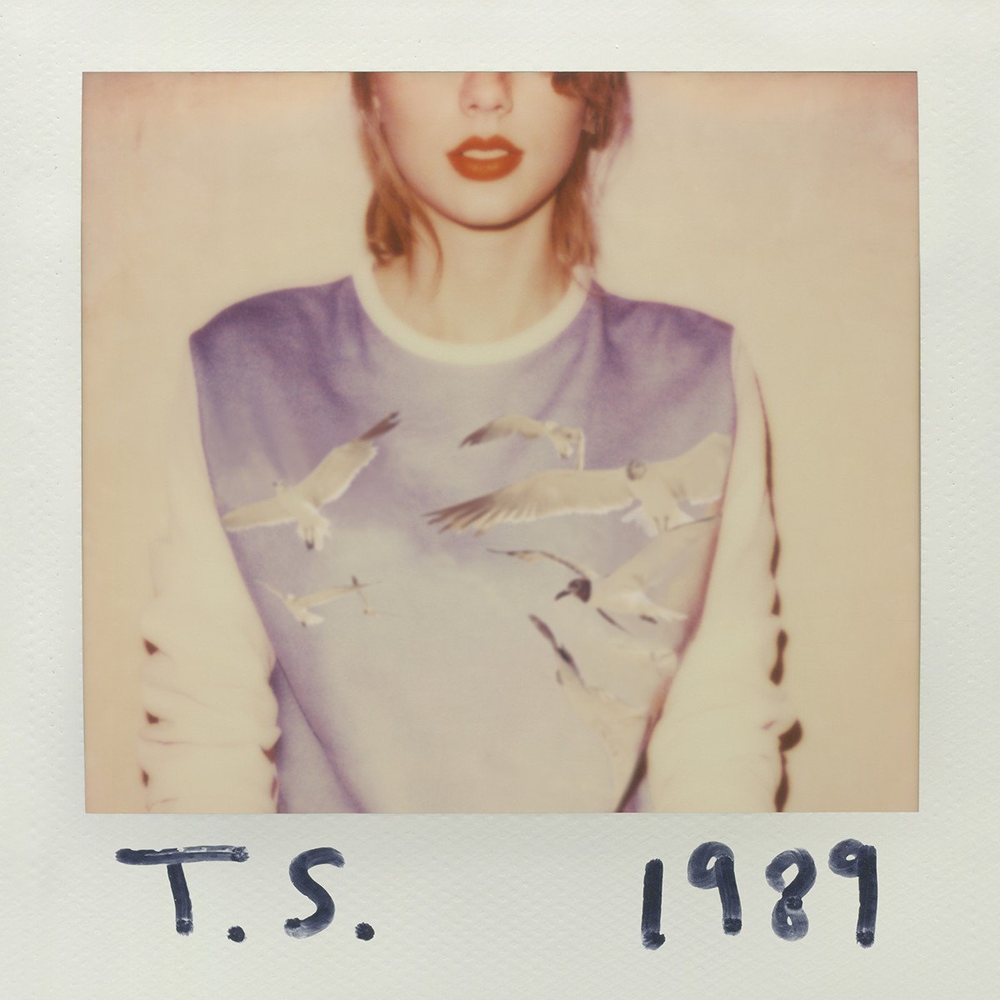
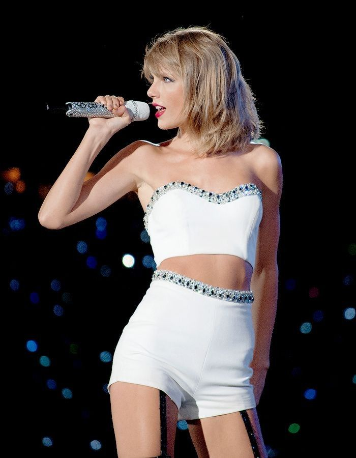

Release Date: October 27, 2014
Singles: Shake It Off, Blank Space, Style, Bad Blood, Wildest Dreams, Out of the Woods, New Romantics
Genre: Pop
1989 was released in 2014 and marked Taylor Swift's complete transition into pop music. She titled 1989 after her birth year as a symbolic artistic rebirth. The album was also heavily inspired by 80s synth-pop. In March 2014, Swift moved from Nashville to New York City; she recounted that moving geographically while being unattached romantically prompted her to embrace new creative ideas. Similar to Fearless,1989 amassed tons of commercial success and awards, with its singles being some of the top performing songs of Swift's discography. 1989 also earned Swift her second Album of the Year award at the 58th Grammy Awards.

1989 transformed Taylor Swift from a country singer into a pop icon. During this era Taylor Swift was as popular as she had ever been. To support the album, Swift embarked on the 1989 World Tour, which was the highest-grossing tour of 2015. The album also spent 11 weeks atop the Billboard 200 and was certified nine-times platinum. It has sold over 14 million copies worldwide and was certified multi-platinum in many countries. Swift was selling out stadiums. Her songs were inescapable on the radio. Her public image, fan support, and career success was at an all-time high.